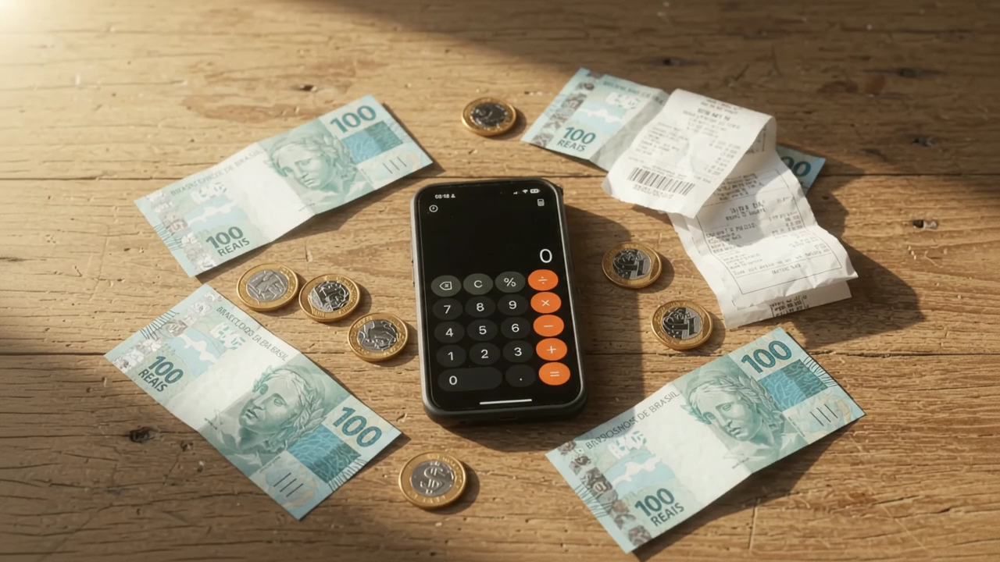
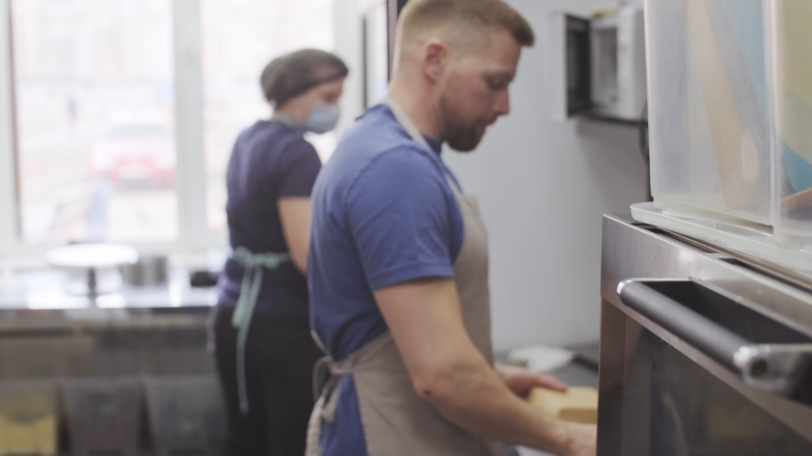

Vídeo feito com IA
Poder de compra 2027: Para onde vai o dinheiro?
Por: Bruna Cruz
O dinheiro extra das famílias pode ir primeiro para as dívidas, mas alimentação e compras de menor valor abrem oportunidades.
No fim do mês, a decisão de compra começa com uma pergunta simples: quanto sobrou depois de pagar as contas? É dessa análise que sai o almoço fora de casa, a pizza do fim de semana ou aquela sobremesa.
Em 2027, a resposta dependerá da renda, do emprego, das despesas da casa e das dívidas que ainda precisam ser pagas. Mesmo quando entra mais dinheiro, parte dele pode ter destino definido antes de chegar ao balcão.
Para o pequeno empreendedor, entender esse cenário é fundamental. A expectativa de melhora econômica abre espaço para novos negócios, mas o cliente deverá escolher com mais cuidado, comparar preços e procurar opções que caibam no bolso.
O cenário reúne duas realidades: famílias com melhores condições para gastar e outras que precisam colocar as contas em dia antes de assumir novas despesas.
O dinheiro extra já tem destino
O mercado de trabalho apresenta resultados positivos com a menor taxa de desemprego para um terceiro trimestre de 2026 desde o início da série histórica, em 2012, e o crescimento do rendimento médio real habitual em relação ao mesmo período de 2025.
- 5,2%Menor taxa de desemprego
- 3,6%Crescimento do rendimento médio
Mas muitas famílias continuam com as contas comprometidas. Segundo a Pesquisa de Endividamento e Inadimplência do Consumidor (PEIC), da Confederação Nacional do Comércio de Bens, Serviços e Turismo (CNC):
Em agosto de 2026, 82% das famílias brasileiras tinham algum tipo de dívida.
Naquele mês, 29,9% estavam com pagamentos atrasados.
Entre as famílias com renda de até três salários mínimos, o percentual chegava a 38,8%.
Publicidade


Primeiro as contas, depois as compras
João Vitor Gonçalves, da Gerência Executiva de Análise e Desenvolvimento Econômico-Estatístico (Geade) da CNC, explica essa diferença:
“Para a família que está com contas atrasadas, uma folga no orçamento pode ser usada primeiro para acertar esses compromissos. Já quem tem renda estável e poucas dívidas terá mais condições de retomar uma compra adiada.”
Mais confiança, mas cautela nas compras grandes
Um dos sinais mais interessantes para entender esse comportamento está na diferença entre a confiança das famílias e a disposição para fazer compras de maior valor.
Em setembro de 2026, o Índice de Intenção de Consumo das Famílias (ICF), da CNC, alcançou 104,5 pontos, acima da marca de 100. Já a intenção de comprar bens duráveis ficou em apenas 75,4 pontos.
Isso mostra que o consumidor pode estar relativamente confiante em relação à própria situação financeira e, ainda assim, evitar compromissos maiores. Mesmo com melhores perspectivas de emprego e renda, uma compra que comprometa o orçamento por vários meses exige mais cautela.
Para restaurantes, padarias e lanchonetes, esse cenário coloca em evidência as refeições, os lanches e outros gastos de menor valor. O cliente continua precisando comer e pode manter pequenos momentos de lazer, mas ajusta a frequência, o preço e o formato das compras.

Como o cliente escolhe?
Com as contas mais apertadas, a decisão de compra passa por uma avaliação prática:
- quanto custa
- o que está incluso
- vale a pena naquele momento
Isso aparece em escolhas cotidianas. O cliente pode optar pelo prato do dia em vez de uma refeição mais completa, dividir uma pizza, trocar de marca ou levar comida para casa. O preço e a ocasião influenciam diretamente essas decisões.
A Associação Brasileira de Bares e Restaurantes (Abrasel) observa o mesmo movimento no setor: o consumidor não deixou de frequentar bares e restaurantes, mas escolhe com mais seletividade, comparando preço e valor percebido e buscando promoções.
Compare os canais de venda
A forma de comprar também ajuda a entender as mudanças no mercado. Dados do índice IDAT, do Itaú, compilados pela CNC, indicaram alta de 10,2% nos gastos online com alimentação e queda de 2,5% nas compras presenciais, entre agosto de 2025 e agosto de 2026.
O índice acompanha gastos da base de clientes do banco. Os números mostram diferenças entre os canais de compra.
Para quem tem restaurante, vale comparar o desempenho dos pedidos por aplicativos com as vendas no salão e as retiradas no balcão. Nessa análise, é importante considerar as taxas cobradas pelas plataformas e os gastos com embalagens, para entender quanto realmente sobra em cada modalidade.
Quando as contas atrasadas recuam, o orçamento pode ganhar espaço para outras despesas. Pela leitura da Abrasel, essa folga tende a voltar ao balcão primeiro como frequência. Observar as visitas, as escolhas e o valor dos pedidos ajuda o empreendedor a reconhecer quanto está sobrando depois de pagar as contas.